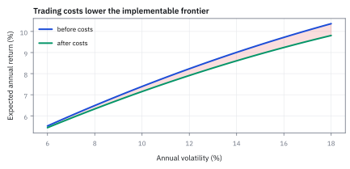

8.8 Linear Combinations
ผลตอบแทนของพอร์ตคือผลรวมถ่วงน้ำหนัก mean กับ SD ของมันคำนวณจาก covariance ได้เสมอ แต่ถ้าผลตอบแทนเป็น MVN ผลรวมจะเป็น Normal ด้วย และนั่นคือสิ่งที่ทำให้อ่าน VaR กับ expected shortfall ได้จากสองตัวเลขนี้
พอร์ตสมมติ \$100 ล้าน มี mean ผลตอบแทนรายปี 6.4% และ SD 9.6% คนหนึ่งใช้สองเลขนี้คำนวณ VaR 99% ได้ \$15.93 ล้าน อีกคนบอกว่ายังตอบไม่ได้ ทั้งคู่ขัดแย้งกันเรื่องสูตร หรือกำลังใช้สมมติฐานไม่เหมือนกัน
ลองตอบก่อนเปิดเฉลย
ทั้งคู่ถูกคนละส่วน 6.4% กับ 9.6% คำนวณได้จาก mean vector กับ covariance เสมอ แต่ VaR 99% ถามว่าผลตอบแทนต่ำกว่าระดับไหนได้เพียง 1% ของเวลา ซึ่งสองเลขนี้ไม่ได้บอก คนแรกเพิ่มสมมติฐานว่าผลตอบแทนของสินทรัพย์เป็น joint Normal พอร์ตจึงเป็น Normal และได้ \$15.93 ล้าน ถ้าผลตอบแทนมาจากสองภาวะตลาดที่ปรับให้ mean และ SD เท่าเดิมทุกตัว VaR 99% จะเป็น \$18.99 ล้าน ความขัดแย้งอยู่ที่สมมติฐาน ไม่ได้อยู่ที่สูตร
ภาพรวมก่อนลงสูตร
พอร์ตไม่ได้ซับซ้อนกว่าผลรวมถ่วงน้ำหนัก $L=a^{\mathsf T}R$ คำถามคือรู้ distribution ของ $R$ แล้วจะรู้ distribution ของ $L$ ได้แค่ไหน ส่วนแรกได้มาฟรีเสมอ คือ mean $a^{\mathsf T}\mu$ และ variance $a^{\mathsf T}\Sigma a$ ซึ่งไม่ต้องสมมติอะไรนอกจาก variance มีค่าจำกัด เป็นสูตรเดียวกับการแปลงเชิงเส้นและความเสี่ยงของพอร์ต ส่วนที่สองคือรูปทรงทั้งก้อน ซึ่ง VaR ต้องใช้ ต้องรู้มากกว่า covariance
ภาพที่ช่วยคิดคือเส้นขนาน ทุกจุด (SPX, QQQ) ที่ให้ผลตอบแทนพอร์ต 60/40 เท่ากันอยู่บนเส้นตรงเส้นเดียว เส้นของค่าต่าง ๆ ขนานกันหมด โอกาสที่พอร์ตได้ระหว่าง −4% กับ −2% คือมวลของเมฆที่อยู่ระหว่างสองเส้นนั้น ถ้าเมฆเป็น MVN มวลระหว่างเส้นขนานเรียงกันเป็น bell curve เสมอ ไม่ว่าเส้นจะหันไปทิศไหน สมบัตินี้เรียกว่า Gaussian closure
หน้านี้จะหาสูตร moments พิสูจน์ด้วย MGF ว่าผลรวมเป็น Normal แล้วใช้กับพอร์ต 50/30/20 ไล่จาก inputs ไปถึง VaR และ expected shortfall แบ่งความเสี่ยงให้แต่ละสินทรัพย์ ดูพอร์ตรายวัน เปลี่ยน horizon และปิดด้วยกับดัก ซึ่งสำคัญที่สุดคือสอง distribution ที่ mean และ covariance เท่ากันทุกตัว แต่ VaR ต่างกัน 19%
รูป — พอร์ตคือการนับมวลระหว่างเส้นขนาน
ศัพท์ที่ใช้ในหัวข้อนี้
- Linear combination
- ผลรวมถ่วงน้ำหนัก $a^{\mathsf T}R$ ที่ตัวคูณเป็นค่าคงที่ จะบวก ลบ หรือรวมกันไม่เป็น 1 ก็ได้ ใช้แทนพอร์ต spread หรือ P&L ของหลายขา
- Affine transformation
- linear combination บวกค่าคงที่ เช่นผลตอบแทนของพอร์ตที่กู้เงินมาลงทุน ลบดอกเบี้ยที่รู้แน่นอน ค่าคงที่ขยับ mean แต่ไม่แตะ variance
- Gaussian closure
- สมบัติที่ว่า affine transformation ของ MVN ยังเป็น Normal ใช้ทำให้ VaR ของพอร์ตคำนวณได้จาก mean กับ SD ของพอร์ตตัวเดียว
- Value at Risk (VaR)
- ระดับขาดทุนที่ถูกเกินเพียงสัดส่วน $1-p$ ของเวลา เช่น VaR 99% ถูกเกินแค่ 1% ใช้เป็นตัวเลขความเสี่ยงหางที่ธนาคารรายงาน ดูVaR และ expected shortfall
- Expected shortfall (ES)
- ค่าเฉลี่ยของการขาดทุนในวันที่ขาดทุนเกิน VaR แล้ว ตอบคำถามว่า “ถ้าเกิดวันแย่ จะแย่เฉลี่ยเท่าไร” ซึ่ง VaR ไม่ตอบ
- Risk contribution
- การแบ่ง variance ของพอร์ตให้แต่ละสินทรัพย์ด้วย $w_i(\Sigma w)_i$ ใช้ดูว่าความเสี่ยงมาจากไหน ไม่ใช่โอกาสที่สินทรัพย์นั้นจะทำให้ขาดทุน
สัญลักษณ์และหน่วย
| สัญลักษณ์ | ความหมาย | หน่วย |
|---|---|---|
| $R,\ \mu,\ \Sigma$ | vector ผลตอบแทน mean vector และ covariance ในลำดับและ horizon เดียวกัน | ผลตอบแทน; ผลตอบแทน² |
| $a,\ L$ | vector ตัวคูณ และผลรวม $L=a^{\mathsf T}R$ | ไม่มีหน่วย; ผลตอบแทน |
| $A,\ c,\ Y$ | matrix ตัวคูณ ค่าคงที่ และ output หลายตัว $Y=AR+c$ | ตามโจทย์ |
| $w,\ V$ | น้ำหนักพอร์ตตอนเริ่มช่วง และมูลค่าพอร์ต | ไม่มีหน่วย; ดอลลาร์ |
| $z_p,\ \varphi,\ \Phi$ | quantile ของ Normal มาตรฐาน density และ CDF ของมัน | ไม่มีหน่วย |
ขั้นที่ 1 — mean และ variance ของผลรวม โดยยังไม่สมมติ Normal
เริ่มจากสิ่งที่ได้ฟรี ขอแค่ทุกสินทรัพย์มี variance จำกัด mean ของผลรวมคือผลรวมของ mean เพราะexpected value เป็นเชิงเส้น ส่วน variance ต้องหัก mean ออกก่อน แล้วยกกำลังสองผลรวมที่เหลือ
จังหวะสำคัญคือการกระจายกำลังสองของผลรวม ได้ทุกคู่ $(i,j)$ คู่ที่ $i=j$ คือ variance ของสินทรัพย์เอง คู่ที่ $i\ne j$ คือ covariance ซึ่งเป็นที่มาของพจน์ไขว้ ตลอดทางไม่มีบรรทัดไหนใช้ Normal หรือความอิสระ สองตัวเลขนี้จึงถูกกับทุก distribution ที่มี variance จำกัด แต่ก็เป็นแค่สองตัวเลข รู้ mean กับ variance แล้วยังไม่รู้ว่าหางซ้ายหนาแค่ไหน นั่นคือช่องว่างที่ขั้นถัดไปต้องเติม
ขั้นที่ 2 — ใช้ MGF พิสูจน์ว่าผลรวมของ MVN ยังเป็น Normal
ถ้าอยากได้มากกว่าสองตัวเลข ต้องเพิ่มสมมติฐาน ให้ $R\sim\mathcal N_n(\mu,\Sigma)$ เครื่องมือที่เหมาะคือ moment generating function เพราะ $e^{tL}=e^{(ta)^{\mathsf T}R}$ แปลว่า MGF ของ $L$ ก็คือ MGF ของ $R$ ที่ประเมินตรงจุด $s=ta$ ไม่ต้อง integrate อะไรใหม่
บรรทัดที่สองมีรูป $\exp(tm+\tfrac12t^2v)$ โดย $m=a^{\mathsf T}\mu$ และ $v=a^{\mathsf T}\Sigma a$ ซึ่งเป็น MGF ของ Normal ตัวเดียวพอดี และ MGF ที่มีค่าจำกัดรอบ $t=0$ ระบุ distribution ได้แบบเดียว $L$ จึงเป็น Normal จริง ไม่ใช่แค่มี mean กับ variance เหมือน Normal ถ้า $a^{\mathsf T}\Sigma a=0$ สูตรยังใช้ได้ แต่ $L$ เป็นค่าคงที่ ไม่มี bell curve ให้วาด เราจึงไม่ต้องขอให้ $\Sigma$ invert ได้
ขยายเป็นหลาย output พร้อมกัน
ค่าคงที่ $c$ ขยับ mean แต่ไม่แตะ covariance การเลือกบางสินทรัพย์ในmarginal ของ MVN คือกรณีที่ $A$ เป็น selection matrix ส่วนพอร์ตหลายพอร์ตพร้อมกันคือกรณีที่แต่ละแถวของ $A$ เป็นน้ำหนักของพอร์ตหนึ่ง ถ้าสองแถวของ $A$ เหมือนกัน $A\Sigma A^{\mathsf T}$ จะ singular แต่ $Y$ ยังเป็น Gaussian ที่ไม่มี density เต็มมิติ
ทางกลับกันก็จริง นิยามหนึ่งของ MVN คือ “ทุก linear combination เป็น Normal” โดยนับค่าคงที่เป็น Normal ที่ variance ศูนย์ คำว่า ทุก สำคัญมาก การตรวจว่าแต่ละสินทรัพย์ดู Normal หรือลองพอร์ตไม่กี่แบบยังไม่พอ กับดักท้ายหน้าแสดงว่าพังได้อย่างไร
ขั้นที่ 3 — พอร์ต 50/30/20: ไล่จาก inputs ไปถึง distribution
โจทย์ให้อะไรมาบ้าง: สมมติผลตอบแทนรายปีของหุ้นสหรัฐ พันธบัตรสหรัฐ และทองคำ เป็น joint Normal น้ำหนัก 0.50, 0.30, 0.20 ตัวเลขนี้เป็น inputs ของแบบจำลอง ไม่ใช่หลักฐานว่าตลาดจริงเป็น Normal
| สินทรัพย์ | Mean | SD | น้ำหนัก |
|---|---|---|---|
| หุ้นสหรัฐ | 9% | 18% | 0.50 |
| พันธบัตรสหรัฐ | 3% | 6% | 0.30 |
| ทองคำ | 5% | 15% | 0.20 |
correlation คือ หุ้น–พันธบัตร −0.20, หุ้น–ทอง 0.05, พันธบัตร–ทอง 0.25 แปลงเป็น covariance ด้วย $\Sigma_{ij}=\rho_{ij}\sigma_i\sigma_j$ ก่อน เช่น $-0.20(0.18)(0.06)=-0.00216$
คำตอบ: mean 6.4% SD 9.6% ต่อปี และภายใต้สมมติฐาน joint Normal จึงเขียนบรรทัดสุดท้ายได้ ถ้าเอาสมมติฐานนี้ออก สอง moments ยังถูกทุกหลัก แต่ไม่รู้ทั้ง distribution
ตรวจเองใน 10 วินาที: พจน์ทแยงรวม $0.25(0.0324)+0.09(0.0036)+0.04(0.0225)=0.009324$ พจน์ไขว้รวม $-0.000108$ จึงได้ 0.009216 ชุดนี้พจน์ไขว้หักล้างกันเกือบหมดเพราะ correlation ติดลบของหุ้นกับพันธบัตร ไม่ได้แปลว่า covariance ไม่สำคัญในพอร์ตอื่น
ขั้นที่ 4 — VaR และ expected shortfall จาก mean กับ SD
เมื่อรู้ว่า $R_p$ เป็น Normal ทั้งหางก็ถูกกำหนดแล้ว ให้ $V$ เป็นมูลค่าพอร์ต ขาดทุนคือ $-VR_p$ VaR ที่ระดับ $p$ คือ quantile $p$ ของขาดทุน และ ES คือค่าเฉลี่ยของขาดทุนเมื่อเกิน VaR แล้ว เขียน $R_p=\mu_p+\sigma_pZ$ โดย $Z$ เป็น Normal มาตรฐาน
บรรทัดแรกได้จากการกลับเครื่องหมาย: ผลตอบแทนต่ำกว่า $\mu_p-z_p\sigma_p$ ได้เพียง $1-p$ ของเวลา ขาดทุนจึงเกิน $V(z_p\sigma_p-\mu_p)$ ได้เพียงเท่านั้น บรรทัดที่สองเป็นค่าเฉลี่ยของหางขวาของ $Z$ ซึ่งด้วยความสมมาตรของ Normal เท่ากับค่าเฉลี่ยของหางซ้ายที่กลับเครื่องหมาย integral ทำได้ในบรรทัดเดียว เพราะอนุพันธ์ของ $-\varphi(t)$ คือ $t\varphi(t)$ พอดี สองสูตรนี้มีแค่ $\mu_p$ กับ $\sigma_p$ ใน Normal ทั้ง VaR และ ES ถูกกำหนดด้วยสองตัวเลขนี้ ไม่มีข้อมูลหางอะไรเพิ่มให้รู้
VaR 99% ราว \$15.93 ล้าน และ ES 99% ราว \$19.19 ล้าน ในปีที่แย่ที่สุด 1% เฉลี่ยแล้วจะขาดทุนมากกว่า VaR อีกราว \$3.25 ล้าน ทั้งสองเป็นตัวเลขของแบบจำลอง ไม่ใช่ขาดทุนสูงสุด และไม่ได้รับประกันว่าทุก 100 ปีจะเจอปีแบบนี้หนึ่งครั้งพอดี ถ้าลงหุ้นล้วน (mean 9% SD 18%) VaR 99% จะเป็น $10^8(2.3263\times0.18-0.09)\approx$ \$32.87 ล้าน เกือบสองเท่า ทั้งที่ mean สูงกว่า
รูป — หางซ้ายของพอร์ต 50/30/20
ขั้นที่ 5 — เงินครึ่งพอร์ตไม่ได้แปลว่ารับความเสี่ยงครึ่งหนึ่ง
คำถามต่อมาของ desk คือความเสี่ยง 9.6% มาจากไหน แบ่ง variance เป็น $C_i=w_i(\Sigma w)_i$ ผลรวมของ $C_i$ คือ $w^{\mathsf T}\Sigma w$ พอดี นี่เป็นการแบ่งบัญชีของ quadratic form ไม่ใช่การแบ่งโอกาส
ทำไมหุ้นใช้เงิน 50% แต่กิน variance ถึง 85.84% เพราะ contribution ไม่ได้คูณน้ำหนักกับ variance ของตัวเองอย่างเดียว มันคูณกับ $(\Sigma w)_i$ ซึ่งคือ covariance ของสินทรัพย์นั้นกับทั้งพอร์ต หุ้นมี SD 18% และเป็นก้อนใหญ่ที่สุดของพอร์ตเอง จึงเคลื่อนไปกับพอร์ตมากที่สุด พันธบัตรได้แค่ 1.46% เพราะ correlation ติดลบกับหุ้นหักล้างความผันผวนของตัวเองเกือบหมด ในพอร์ตที่มี hedge บาง contribution ติดลบได้ (โจทย์ข้อ 2 ท้ายหน้า)
เชื่อม contribution กับอนุพันธ์ของความเสี่ยง
บรรทัดสุดท้ายคือเหตุที่ contribution รวมกันได้ความเสี่ยงทั้งพอร์ตพอดี ลองใช้: ย้ายน้ำหนัก 0.01 จากหุ้นไปพันธบัตร อัตราเปลี่ยนของ SD คือ $(u_2-u_1)/\sigma=(0.000450-0.015822)/0.096\approx-0.1601$ จึงประมาณ SD ใหม่ได้ $9.6\%-0.01(16.01\%)\approx9.440\%$ คำนวณตรงที่น้ำหนัก $(0.49,\ 0.31,\ 0.20)$ ได้ 9.4407% ใกล้กันเพราะขยับน้อย ถ้าอยากให้ทั้งสามรับความเสี่ยงเท่ากัน (risk parity) น้ำหนักต้องเป็นราว $(0.2115,\ 0.5869,\ 0.2016)$ ได้ SD 6.095% แต่ mean ตกเหลือ 4.672%
รูป — ส่วนแบ่งของเงินกับส่วนแบ่งของ variance
ขั้นที่ 6 — อีก horizon: พอร์ตรายวัน 60/40 ของ SPX กับ QQQ
โจทย์ให้อะไรมาบ้าง: แบบจำลองรายวันของรูปเส้นขนานด้านบน SPX mean 0.04% SD 2% QQQ mean 0.03% SD 3% covariance 2.4 ในหน่วยเปอร์เซ็นต์ยกกำลังสอง (correlation 0.4) น้ำหนัก 0.6 กับ 0.4 ระวังชื่อ “60/40” ตรงนี้เป็นกองทุนหุ้นสองกอง ไม่ใช่พอร์ตหุ้น/พันธบัตร 60/40 ที่คนมักหมายถึง
คำตอบ: mean 0.036% SD 2.008% ต่อวัน และโอกาสที่พอร์ตลงระหว่าง 2% ถึง 4% ในหนึ่งวันคือ 13.31% ซึ่งคือพื้นที่แดงในรูปเส้นขนาน วางสามตัวเลขเรียงกันจะเห็นว่า covariance ทำอะไร ถ้าสองตัวไม่ขยับร่วมกันเลยจะได้ $\sqrt{2.88}\approx1.697\%$ ถ้าขยับตามกันเป๊ะจะได้ค่าเฉลี่ยถ่วงน้ำหนัก $0.6(2)+0.4(3)=2.4\%$ ของจริงอยู่ระหว่างกลาง
ตรวจเองใน 10 วินาที: spread SPX − QQQ ใช้ตัวคูณ $(1,-1)$ ได้ mean 0.01% และ variance $4+9-2(2.4)=8.2$ คราวนี้ covariance ถูกหักออกเพราะ $2a_1a_2$ ติดลบ spread ก็ยังเป็น Normal แม้สองตัวไม่อิสระกัน
รูป — mean กับ SD ของพอร์ตทุกน้ำหนักระหว่าง SPX กับ QQQ

ขั้นที่ 7 — เปลี่ยน horizon ต้องเพิ่มแบบจำลองตามเวลา
ถ้าหัวหน้าขอ VaR รายวันของพอร์ต 50/30/20 แต่เรามีแบบจำลองรายปี ต้องสมมติเพิ่มว่าผลรายปีคือผลรวมของผลรายวัน $T=252$ วันซื้อขาย (ปีหนึ่งมีวันทำการราว 252 วันหลังหักเสาร์อาทิตย์และวันหยุดตลาด) แต่ละวันมี mean และ variance เท่ากัน และวันต่าง ๆ ไม่มี covariance ต่อกัน
บรรทัด variance คือสูตรของขั้นที่ 1 อีกครั้ง โดยมองแต่ละวันเป็น “สินทรัพย์” หนึ่งตัวที่น้ำหนัก 1 เมื่อ covariance ข้ามวันเป็นศูนย์ พจน์ไขว้หายหมด variance จึงโตตาม $T$ และ SD โตตาม $\sqrt T$ นี่คือที่มาของการหารด้วย $\sqrt{252}$ quantile ในบรรทัดสุดท้ายใช้สมมติฐานอีกชั้น คือผลรายวันเป็น Normal ด้วย จึงได้ VaR 99% รายวันราว 1.38% หรือ \$1.38 ล้าน ถ้าผลตอบแทนวันนี้สัมพันธ์กับเมื่อวาน พจน์ไขว้ข้ามวันจะกลับมา และการหารด้วย $\sqrt{252}$ จะผิด
อีกเงื่อนไขที่ซ่อนอยู่ในทุกขั้นของหน้านี้คือน้ำหนักคงที่ตอนเริ่มช่วง ถ้าซื้อจำนวนหน่วยคงที่แล้วถือจนจบช่วงโดยไม่มีเงินเข้าออก สูตร $w^{\mathsf T}R$ ถูกพอดี เช่นลง \$60 ใน SPX กับ \$40 ใน QQQ ถ้า SPX ขึ้น 10% และ QQQ ลง 5% มูลค่าปลายทางคือ $66+38=104$ ผลตอบแทน 4% เท่ากับ $0.6(10\%)+0.4(-5\%)$ แต่ถ้า rebalance ระหว่างช่วง หรือพอร์ตมี option ซึ่ง payoff ไม่เป็นเส้นตรง ผลปลายทางไม่ใช่ linear combination ของผลตอบแทนอีกต่อไป และ Gaussian closure ใช้ไม่ได้ ต้องใช้การจำลองของหน้าถัดไป
Gaussian เป็นสมมติฐาน ไม่ใช่ผลที่ตรวจได้จาก mean กับ covariance
marginal เป็น Normal ทุกตัวยังไม่พอ ให้ $X\sim\mathcal N(0,1)$ และ $W=\pm1$ อย่างละครึ่งโดยอิสระ ตั้ง $Y=WX$ แล้วทั้ง $X$ และ $Y$ เป็น Normal มาตรฐาน covariance ศูนย์ แต่พอร์ตครึ่งต่อครึ่ง $L=(X+Y)/2$ เป็นศูนย์พอดีเมื่อ $W=-1$ และเป็น $X$ เมื่อ $W=1$ อย่างละครึ่งของเวลา จึงมี mean 0 และ variance $\tfrac12\mathbb E[X^2]=0.5$ เท่ากับที่สูตร $a^{\mathsf T}\Sigma a=\tfrac14(1+1)$ ให้ แต่ไม่ใช่ Normal
รูป — สูตร Normal กับของจริงที่ mean และ variance เท่ากัน
mean และ covariance เท่ากันทุกตัว VaR ยังต่างได้ สมมติผลตอบแทนพอร์ต 50/30/20 มาจากสองภาวะตลาด 75% ของเวลาเป็น Normal ที่ SD 7.31% และ 25% ของเวลาเป็น Normal ที่ SD 14.43% mean 6.4% ทั้งคู่ variance รวมคือ $0.75(7.31^2)+0.25(14.43^2)\approx92.16=9.6^2$ เท่ากับ Normal เดิมพอดี แต่ VaR 99% กลายเป็น \$18.99 ล้าน (สูงกว่า \$15.93 ล้าน 19%) และ ES 99% เป็น \$24.73 ล้าน (สูงกว่า \$19.19 ล้าน 29%) ที่ระดับ 95% แบบผสมกลับให้ VaR ต่ำกว่า (\$8.87 ล้าน เทียบ \$9.39 ล้าน) แต่ ES ยังสูงกว่า (\$14.98 ล้าน เทียบ \$13.40 ล้าน) VaR ระดับเดียวไม่เห็นหางที่เลยออกไป variance ใช้เป็นตัววัดความเสี่ยงได้ครบเฉพาะเมื่อ distribution เป็น Normal
| ทางลัด | ตัวเลข | ผิดเพราะอะไร |
|---|---|---|
| เฉลี่ย SD ถ่วงน้ำหนัก | $0.5(18)+0.3(6)+0.2(15)=13.8\%$ | เท่ากับสมมติ correlation เป็น 1 ทุกคู่ สูงกว่าค่าจริง 9.6% ถึง 44% |
| ใช้ correlation matrix แทน covariance | $w^{\mathsf T}Cw=0.36$ | เป็น variance ของผลรวมตัวแปรที่ถูกหารด้วย SD แล้ว ไม่ใช่ SD 60% |
| ลืมพจน์ไขว้ | SD ประมาณ 9.656% | เท่ากับแอบสมมติว่าทุกคู่ covariance เป็นศูนย์ |
ใช้ทำอะไรบนโต๊ะจริง
VaR แบบ parametric หรือ delta-normal ที่ระบบความเสี่ยงคำนวณได้ในเสี้ยววินาทีคือขั้นที่ 3 และ 4 ของหน้านี้ เอาน้ำหนักคูณ covariance ได้ SD ของพอร์ต แล้วคูณ $z_p$ มันเร็วและอธิบายง่าย แต่ทั้งหมดยืนอยู่บนสมมติฐาน joint Normal และ payoff เชิงเส้น ส่วนMarkowitz portfolio selection ที่เลือกพอร์ตด้วย mean กับ variance อย่างเดียว ก็ยืนอยู่บนเหตุผลเดียวกัน คือเมื่อพอร์ตเป็น Normal สองตัวเลขนี้บอกทุกอย่าง พอร์ตที่มี option หรือผลตอบแทนที่หางหนา ต้องใช้การจำลองแทน
โจทย์ตรวจความเข้าใจ
1. เพิ่มน้ำหนักเสี่ยงของพอร์ต 50/30/20 เป็นสองเท่า โดยกู้เงินเท่ากับมูลค่าพอร์ตเดิมที่ต้นทุนแน่นอน 2% ต่อปี mean, SD และ VaR 99% บนพอร์ต \$100 ล้าน เป็นเท่าไร
เฉลย
ผลตอบแทนคือ $2R_p-0.02$ ยังเป็น Normal เพราะเป็น affine transformation mean $2(0.064)-0.02=0.108$ variance $4(0.009216)=0.036864$ SD 19.2% VaR 99% $=10^8(2.3263\times0.192-0.108)\approx$ \$33.87 ล้าน มากกว่าสองเท่าของเดิม (\$31.87 ล้าน) อีก \$2 ล้าน ซึ่งคือดอกเบี้ยที่ต้องจ่ายแน่นอน ค่าคงที่ไม่เปลี่ยน SD แต่เลื่อนทั้ง distribution
2. สองสินทรัพย์มี covariance $\begin{bmatrix}0.04&-0.015\\-0.015&0.01\end{bmatrix}$ และน้ำหนัก $(0.2,\ 0.8)$ variance contribution ติดลบได้หรือไม่
เฉลย
$\Sigma w=(0.04(0.2)-0.015(0.8),\ -0.015(0.2)+0.01(0.8))=(-0.004,\ 0.005)$ contribution คือ $(0.2(-0.004),\ 0.8(0.005))=(-0.0008,\ 0.004)$ รวมเป็น variance 0.0032 สัดส่วนจึงเป็น −25% และ 125% สินทรัพย์แรกเคลื่อนสวนทางกับพอร์ต การถือเพิ่มเล็กน้อยจึงลดความเสี่ยง ไม่ได้แปลว่ามีโอกาสติดลบ
3. สองสินทรัพย์มีผลตอบแทน $\mathcal N(1,\ 0.1)$ และ $\mathcal N(2,\ 0.5)$ (หน่วยเปอร์เซ็นต์ และเปอร์เซ็นต์ยกกำลังสอง) correlation −0.25 และเป็น joint Normal พอร์ต 70/30 มี distribution อะไร โอกาสที่ได้ต่ำกว่า 1% เป็นเท่าไร และน้ำหนักไหนให้ variance ต่ำสุด
เฉลย
covariance คือ $-0.25\sqrt{0.1\times0.5}\approx-0.0559$ mean $0.7(1)+0.3(2)=1.3$ variance $0.1(0.49)+0.5(0.09)+2(-0.0559)(0.21)=0.049+0.045-0.02348=0.07052$ SD ราว 0.2656 พอร์ตจึงเป็น $\mathcal N(1.3,\ 0.07052)$ และ $P(L\lt1)=\Phi(-0.3/0.2656)=\Phi(-1.130)\approx12.9\%$ ส่วนน้ำหนัก $x$ ในตัวแรกที่ทำให้ $0.1x^2+0.5(1-x)^2-0.1118x(1-x)$ ต่ำสุด หาจากอนุพันธ์เป็นศูนย์ ได้ $x=(0.5+0.0559)/(0.6+0.1118)\approx0.781$ SD 0.2566 และ mean 1.219 ซึ่งต่ำกว่าแต่ละตัวทั้งคู่ นี่คือผลของ correlation ติดลบ
คำนวณซ้ำด้วย JavaScript
เปิดดูโค้ด
// Portfolio moments (any distribution) and Gaussian VaR / ES (needs joint Normal).
const dot = (a, b) => a.reduce((s, x, i) => s + x * b[i], 0);
function project(mu, S, a, shift = 0) {
const u = S.map(row => dot(row, a)), variance = dot(a, u);
return {mean: dot(a, mu) + shift, variance, sd: Math.sqrt(variance), u,
shares: a.map((x, i) => x * u[i] / variance)};
}
const phi = z => Math.exp(-z * z / 2) / Math.sqrt(2 * Math.PI);
function Phi(x) { // Simpson's rule
const n = 20000, h = Math.abs(x) / n; let s = 0;
for (let i = 0; i <= n; i++) s += (i === 0 || i === n ? 1 : i % 2 ? 4 : 2) * phi(i * h);
return 0.5 + Math.sign(x) * s * h / 3;
}
const z99 = 2.3263478740408408, z95 = 1.6448536269514722;
const gaussVaR = (p, V, z) => V * (z * p.sd - p.mean);
const gaussES = (p, V, z, tail) => V * (p.sd * phi(z) / tail - p.mean);
const mu = [0.09, 0.03, 0.05], w = [0.5, 0.3, 0.2], V = 1e8;
const S = [[0.0324, -0.00216, 0.00135], [-0.00216, 0.0036, 0.00225], [0.00135, 0.00225, 0.0225]];
const p = project(mu, S, w);
// Two-regime mixture with the same mean and the same variance as p
const k = Math.sqrt(0.75 * 0.76 ** 2 + 0.25 * 1.5 ** 2), a1 = 0.76 / k, a2 = 1.5 / k;
const mixCDF = z => 0.75 * Phi(z / a1) + 0.25 * Phi(z / a2);
function mixQuantile(q) { let lo = -20, hi = 20;
for (let i = 0; i < 200; i++) { const m = (lo + hi) / 2; if (mixCDF(m) < q) lo = m; else hi = m; }
return (lo + hi) / 2; }
function mixRisk(tail) {
const z = mixQuantile(tail);
const es = (0.75 * a1 * phi(z / a1) + 0.25 * a2 * phi(z / a2)) / tail; // mean of -Z below z
return {VaR: V * (-z * p.sd - p.mean), ES: V * (es * p.sd - p.mean)};
}
const daily = project([0.04, 0.03], [[4, 2.4], [2.4, 9]], [0.6, 0.4]); // percent units
console.log({
portfolio: p,
normal99: {VaR: gaussVaR(p, V, z99), ES: gaussES(p, V, z99, 0.01)},
normal95: {VaR: gaussVaR(p, V, z95), ES: gaussES(p, V, z95, 0.05)},
mixture99: mixRisk(0.01), mixture95: mixRisk(0.05),
stockOnlyVaR: gaussVaR(project(mu, S, [1, 0, 0]), V, z99),
leveredVaR: gaussVaR(project(mu, S, w.map(x => 2 * x), -0.02), V, z99),
daily, bandMinus4toMinus2: Phi((-2 - daily.mean) / daily.sd) - Phi((-4 - daily.mean) / daily.sd),
spread: project([0.04, 0.03], [[4, 2.4], [2.4, 9]], [1, -1]),
dailyFromAnnual: {mean: p.mean / 252, sd: p.sd / Math.sqrt(252), q01: p.mean / 252 - z99 * p.sd / Math.sqrt(252)},
negativeShares: project([0, 0], [[0.04, -0.015], [-0.015, 0.01]], [0.2, 0.8]).shares,
xPlusWX: {trueTail: 0.5 * Phi(-2), normalTail: Phi(-2 / Math.sqrt(0.5))}
});สิ่งที่ควรตอบได้หลังอ่าน
- mean $a^{\mathsf T}\mu$ และ variance $a^{\mathsf T}\Sigma a$ ของผลรวมถูกกับทุก distribution ที่มี variance จำกัด ไม่ต้องอิสระหรือ Normal
- ถ้า $R$ เป็น MVN ทุก affine combination เป็น Normal พิสูจน์ด้วย MGF ในบรรทัดเดียว และนิยาม MVN กลับทางได้ว่าทุก linear combination เป็น Normal
- ใน Normal ทั้ง VaR $=V(z_p\sigma-\mu)$ และ ES $=V(\sigma\varphi(z_p)/(1-p)-\mu)$ ถูกกำหนดด้วย mean กับ SD เท่านั้น
- risk contribution $w_i(\Sigma w)_i$ แบ่ง variance ตามการเคลื่อนไปกับทั้งพอร์ต เงิน 50% อาจเป็นความเสี่ยง 86%
- mean และ covariance เท่ากันไม่ได้แปลว่าหางเท่ากัน marginal เป็น Normal ก็ไม่พอ Gaussian closure เป็นสมมติฐานที่ต้องประกาศ
หน้าถัดไปเดินทางกลับ: แทนที่จะรวม MVN เป็นตัวเลขตัวเดียว เราจะสร้าง MVN ทั้งก้อนจากเลขสุ่มที่อิสระต่อกัน เพื่อจำลอง scenario ของพอร์ตที่สูตรปิดในหน้านี้ใช้ไม่ได้ ไปต่อที่ การจำลอง MVN ด้วย Cholesky